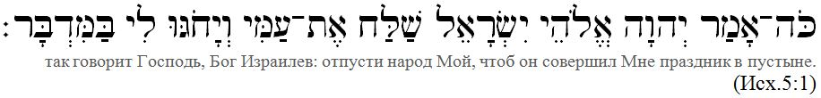
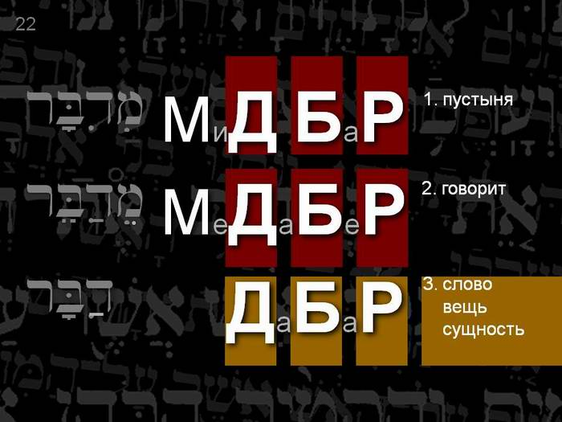
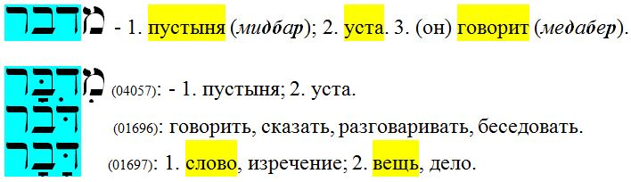

Бог говорит в ПУСТЫНЕ
Сорок лет Израиль странствовал по пустыне. Что это было? Сорокалетнее наказание? Или благословение? Ответ помогает получить обращение к оригинальному тексту (на древнееврейском языке).
«Глас вопиющего в пустыне (kol' kore bemidbar): приготовьте путь Господу, прямыми сделайте в степи стези Богу нашему; (Ис.40:3) + (Иоан.1:23) «Он сказал: я глас вопиющего в пустыне: исправьте путь Господу, как сказал пророк Исаия».

«ве яхогу ли бемидбар…» (ивр. – будут праздновать Мне). Он освободил нас, чтобы мы торжествовали, праздновали пред Ним – празднование, как высший уровень священнодействия, когда народ, как один человек, одно сердце, празднует в чистоте и согласии.
Интересно, что Израиль не случайно оказался в пустыне по исходе своём из Египта. И не случайно все еврейские праздники тесно связаны с пустыней.
И это на первый взгляд довольно странно. Ведь пустыня не самое лучшее место для обитания. Но пустыня – это самое подходящее место молить Бога о дожде, о воде живой…
Бог преследует Свою определенную цель, когда влечет Свой народ в пустыню. Состояние «пустыни» - блаженное состояние..
Состояние «пустыни» - Он видит как условие празднования (сравни с «…нищие духом, ибо их есть Царство Небесное…» (Матф.5:3)).
От того Иаков говорит: «С великою радостью принимайте, братия мои, когда впадаете в различные искушения, 3 зная, что испытание вашей веры производит терпение; (Иак.1:2-6).
Т.е. об особенно близких отношениях с Богом.

Итак, в чем причина избрания Творцом именно пустыни? Многое объясняет перевод самого слова «пустыня» с иврита. В отличие от других языков, где понятие «пустыня» указывает, прежде всего, на пустоту, на отсутствие комфорта, людей, жизни…
В иврите – иначе:

 Корень этого слова «говорить» и также «пустыня» - "давар", что означает - "слово", и также и "вещь", "сущность". Попадая в пустыню, очень скоро проявляется, обнаруживается (овеществляется) сущность человека, то каков он есть внутри, выходит наружу…
Корень этого слова «говорить» и также «пустыня» - "давар", что означает - "слово", и также и "вещь", "сущность". Попадая в пустыню, очень скоро проявляется, обнаруживается (овеществляется) сущность человека, то каков он есть внутри, выходит наружу…
Бог говорит к Своему народу: "ШМА! Слушай Израиль!"
Каждый из нас имеет в своей жизни времена пустыни и сталкивается с необходимостью перейти через море.
Но есть особые времена, определенные Самим Творцом вселенной, когда Он ожидает от нас очень важного духовного действия – в согласии, всем вместе праздновать это пред Ним: мысленно обращаться к пустыне и проходить чрез Красное море. Он жаждет говорить к нам…
автор: Эфраим Калиш /TORAART/